从零打造一个简化版的 Claude Code —— 大模型的能力边界、工具、ReAct 循环、系统提示词，到手写 Agent 主循环与 Plan & Execute 模式
不读全文，也能知道这篇讲了什么
解决思路只有一句话：给大模型接上「工具」。有了工具，模型就能自己查文件、自己写代码、自己跑程序，整个过程不需要人插手。把「一个大模型」和「一堆工具」组装起来，就是一个 Agent。
先把问题问清楚：为什么大模型自己干不了活？
在正式理解 Agent 之前，需要先想清楚一个问题：今天的大模型（如 GPT-4o、DeepSeek 等）虽然回答问题很厉害、逻辑也很强，但它们有一个绕不开的限制 —— 大模型无法感知，也无法改变外部世界。
原文举了一个很直观的例子：
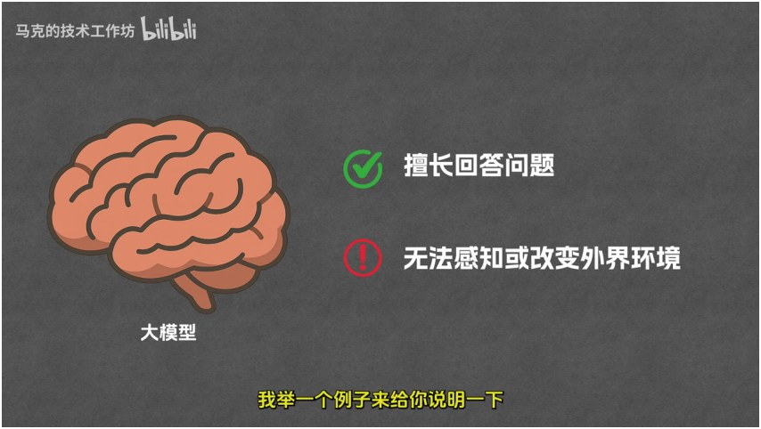
答案很朴素：给大模型装上「工具」
解决思路其实很简单：给大模型接上「工具（Tool）」。视频里给出的工具清单是三个最基本的：
工具就像是大模型的「感官和四肢」。有了工具，大模型就能自己查询已有文件、自己写入代码、自己运行程序，整个过程不需要人插手，完全自动化。
视频里有一个很形象的对比：大模型常被画成一个「大脑」图标，而 Agent 则被画成一个「机器人」图标。因为 Agent 有了感官和四肢，能自己独立做事，就像一个机器人。
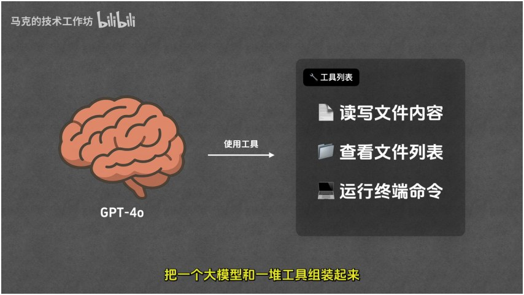
形态各不相同，底层思想却完全一致
Agent 不止一种，擅长的领域也不相同。原文里重点提了三类：
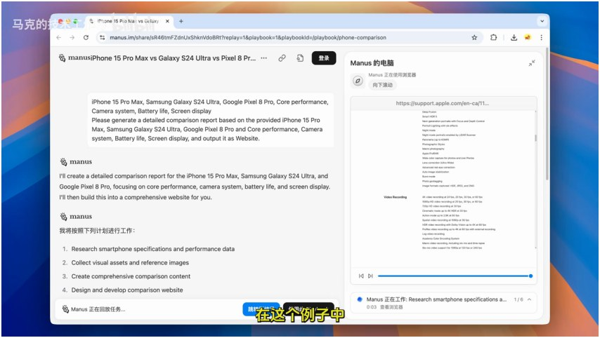
四个词：Thought / Action / Observation / Final Answer
Agent 的运行模式有多种，目前最著名、使用最广泛的是 ReAct（读作「瑞·阿克特」）。
ReAct 的核心流程是一个循环：
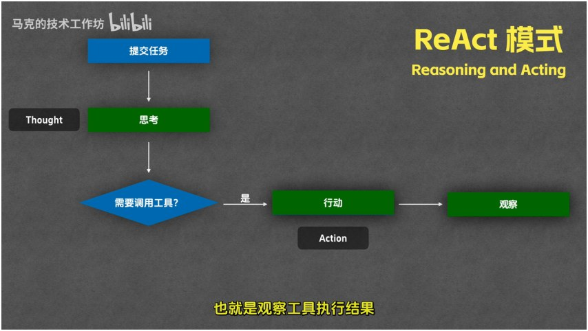
模型不是被专门训练成这样的，剧本写在提示词里
一个关键问题：为什么模型拿到用户问题后，会「先思考再行动」，而不是直接行动？是因为模型被专门训练成这样吗？
系统提示词是和用户问题一起送给模型的提示词，它规定了模型的角色、运行时需要遵守的规则、以及各种环境信息。只要你在系统提示词里写「你的回答必须包含两个 XML 标签：question 存放用户问题、answer 存放你的回答」，模型就会照此规范输出。要让模型按 ReAct 模式运行，系统提示词会更复杂，大致包含五个部分：
| 组成部分 | 作用 | 典型内容 |
|---|---|---|
| ① 职责描述 | 告诉模型怎么做事 | 把任务分解为多步，每步先用 Thought 思考，再用 Action 调用工具，结果通过 Observation 返回，直到能给出 Final Answer |
| ② 示例 | 给出完整的示范轨迹 | 如「埃菲尔铁塔多高」→ Thought → Action 调 get_height → Observation → Final Answer |
| ③ 可用工具 | 列出能调用的工具清单 | 读取文件、写入文件、运行终端命令等 |
| ④ 注意事项 | 对危险操作给出约束 | 运行终端命令等危险动作需要先确认 |
| ⑤ 环境信息 | 交代当前所处的现场 | 当前操作系统、工作目录、目录下的文件列表等 |
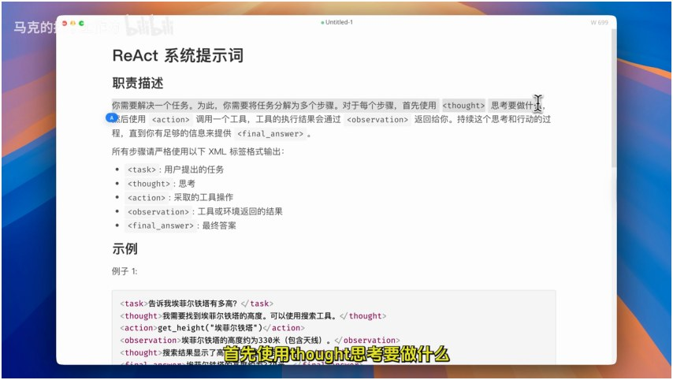
先人工扮演「工具」，把循环跑通一遍
原文用 DeepSeek 现场演示了一遍 ReAct 流程。注：DeepSeek 没有提供单独提交系统提示词的入口，所以把系统提示词和用户任务合在一起作为一条消息提交，多数情况下模型依然能按预期运行。
<thought> 中思考，再用 <action> 请求调用 write_to_file 写入 index.html，我们回复 <observation>「写入成功」；write_to_file 函数的是 Agent 的「工具调用组件」。刚才是我们用人工回复 observation 来模拟，而真正运行 Agent 时，工具调用组件会自动执行并把结果塞回给模型。<thought> 与 <action><action>，执行对应函数<observation> 回填给模型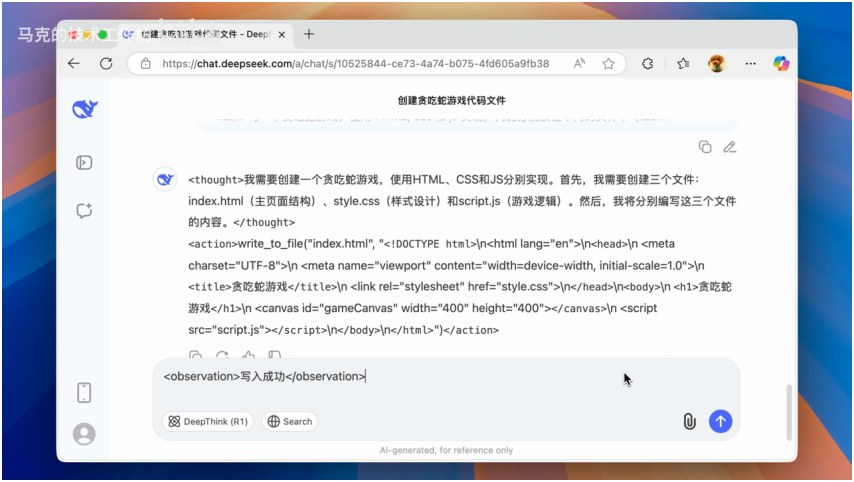
在「系统提示词 + 配套代码」的基础上，搭一个真正可用的 ReAct Agent
在「系统提示词 + 配套代码」的基础上，就能搭出一个真正可用的 ReAct Agent。原文作者已经把它开源到 GitHub 上，并现场演示了逐行讲解代码。
进入项目目录后，用命令启动 Agent：
uv run agent.py snake其中 snake 是脚本的第一个参数，告诉 agent.py 要操作的项目目录就是 snake 文件夹（里面原本是空的）。启动后输入任务「写一个贪吃蛇游戏，用 HTML/CSS/JS 实现，代码分别放在不同文件中」，Agent 便开始运行。
运行结果同样是 Thought / Action / Observation 三段式，写入 index.html → css → js，最后给出 Final Answer。注意这次的「写入成功」是真实执行了 write_to_file 工具，不是模拟。打开 index.html，贪吃蛇能跑、能吃到方块、左上角有分数 —— 完全可以作为简化版 Claude Code 使用。
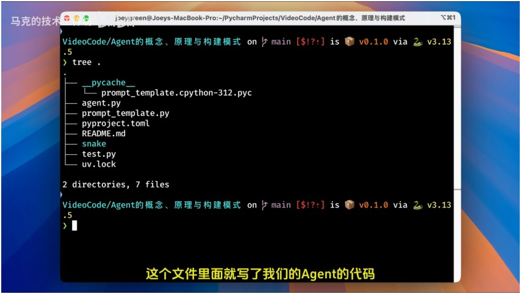
项目里真正需要关注两个东西：agent.py（Agent 逻辑）和 snake 文件夹（产物）。入口代码大致做了这些事：
project_directory：传给脚本的第一个参数（snake 文件夹）；tools：可用工具列表，给出三个 —— 读取文件、写入文件、运行终端命令；ReActAgent，传入 tools、模型（GPT-4o）、项目目录；agent.run(任务) 启动 Agent。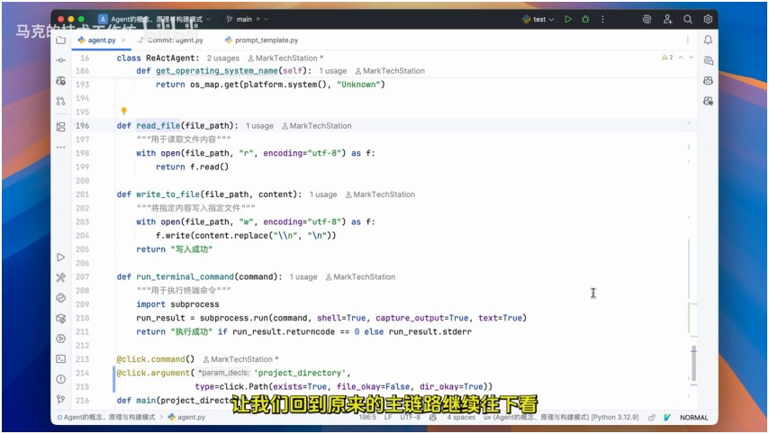
ReActAgent 类构造时接收三个参数：工具列表、要用的模型、项目目录。它还有一个 agent 主程序里负责串联流程的逻辑 —— 也就是下面要讲的 run 函数。
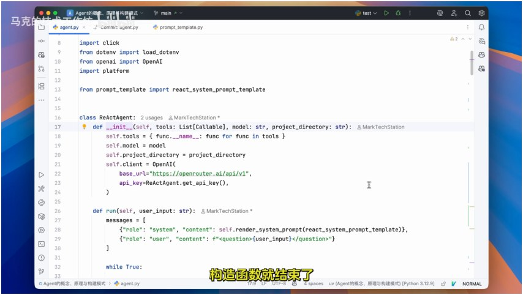
run(任务) 是 ReActAgent 的核心调用，大致做了这些事：
render_system_prompt 渲染，填入工具列表、操作系统、文件列表等占位符）和用户问题；call_model 拿到模型结果，提取 <thought> 打印；<thought> 之后是否是 Final Answer：是则结束；否则一定包含 <action>，解析出函数名与参数；<observation>，再加入 message 列表；while True:
messages = [系统提示词(工具/环境), 用户任务, ...历史消息]
content = call_model(messages) # ① 请求模型
thought = 提取 <thought> # ② 打印思考
if Final Answer in content: 结束 # ③ 判断是否收尾
action = 解析 <action> 的函数名与参数 # ④ 解析动作
if action 是终端命令: 先询问用户确认 # ⑤ 危险操作拦截
observation = 执行工具函数(action) # ⑥ 真正干活
messages.append(<observation>...) # ⑦ 回填结果，进入下一轮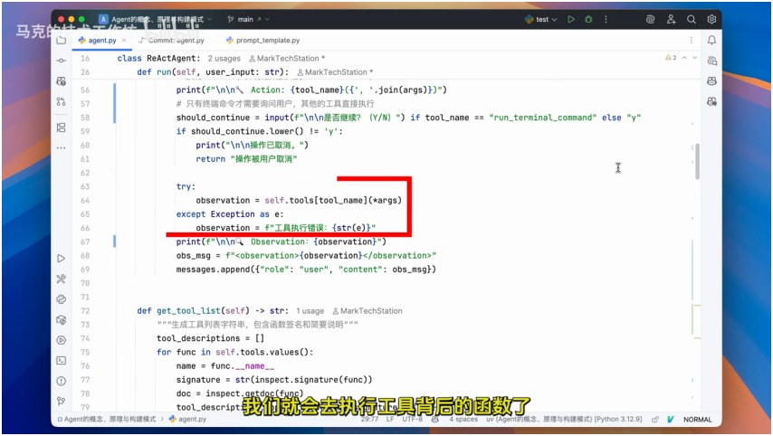
用户、主程序、模型、工具，四个角色的分工与对话
为了彻底看清整个过程发生了什么，原文画了一张流程图。流程里有两类角色：用户 和 Agent；而 Agent 又可分为三部分：
负责思考与决定 Action。
函数，真正干活的四肢 —— 读写文件、查看文件列表、运行终端命令。
负责串联整个流程的代码逻辑，可以理解成前面代码里的 run 函数。
它们的沟通方式是：
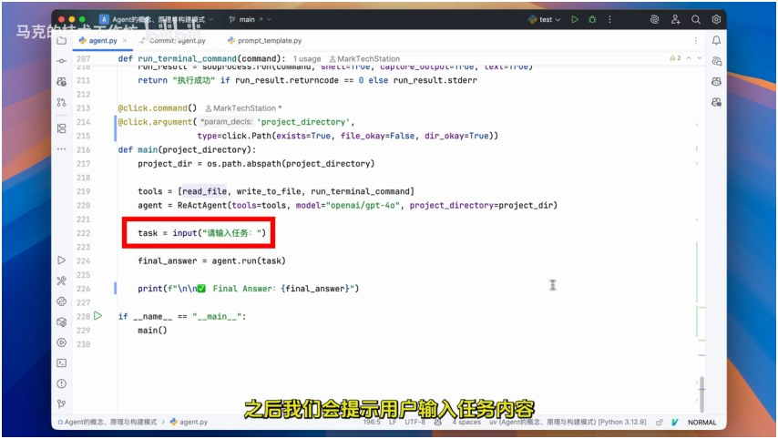
ReAct 最常用、最广，但它不是唯一方案
ReAct 最常见、使用最广，但它不是唯一方案。很多 Agent 的运行方式是「先规划，再执行」：
这种「先规划再执行」目前没有统一名字，各实现也略有差异。原文重点讲了其中一个有名的实践 —— LangChain 提出的 Plan & Execute 模式。
从总体看它也遵循「先规划再执行」，但引入了「动态调整规划」的环节，灵活性更强。其内部模块有：
其中 plan / replan 可以是同一个模型，也可以分开；执行 Agent 内部仍可用 ReAct 模式运行，并内置如网络搜索等工具。
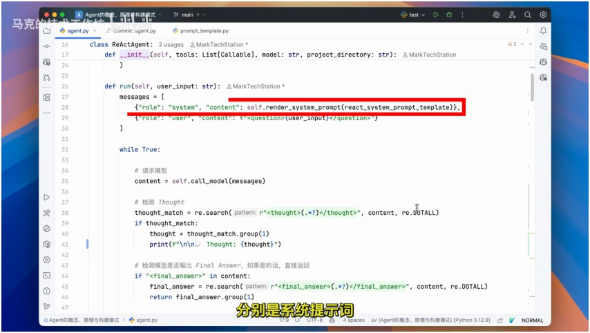
以「今年澳网男子冠军的家乡是哪里」为例，主程序把问题发给 Plan 模型，得到执行步骤（查询当前日期 → 查询该年澳网男单冠军名字 → 据名字查家乡）。随后主程序把计划交给执行 Agent 执行第一步，执行完后把「用户问题 + 计划 + 执行记录」发给 Replan 模型，生成下一轮计划。
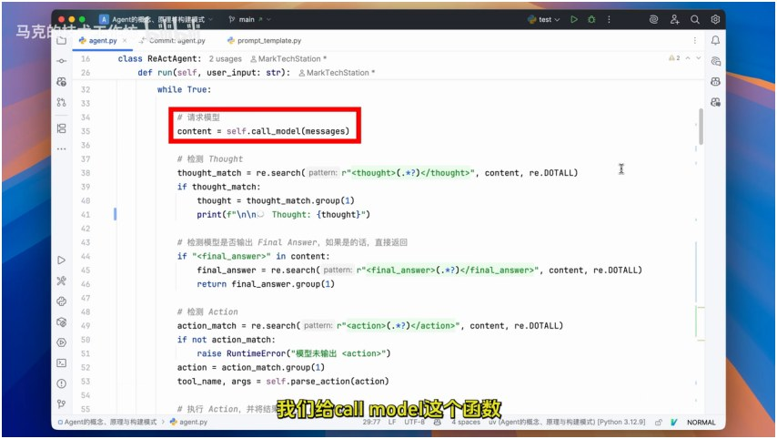
整个循环一般运行多轮，以这题为例运行三轮，对应计划中的三步。每一轮含「执行环节 + Replan 环节」：
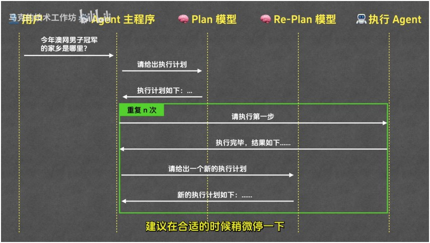
把 ReAct 与 Plan & Execute 放在一起看，更容易理解各自的取舍
| 对比维度 | ReAct | Plan & Execute |
|---|---|---|
| 核心思路 | 边思考边行动，循环推进 | 先整体规划，再分步执行并可动态调整 |
| 提出/代表 | 2022.10 论文；最广泛使用 | LangChain 实践方案 |
| 规划方式 | 隐式，在 Thought 中逐步决定 | 显式，由 Plan/Replan 模型维护计划 |
| 适用场景 | 步骤不固定、需边做边看的任务 | 目标清晰、可预先拆解的复杂任务 |
| 灵活性 | 灵活但易走弯路 | 计划清晰，且能按结果动态修正 |
| 典型产品 | Cursor、简化版 Claude Code | Manus、Claude Code（to-do 模式） |
回到开头的两个问题，现在应该很清楚了
原文作者也给出一条务实的学习路径：
main()、ReActAgent、run() 循环；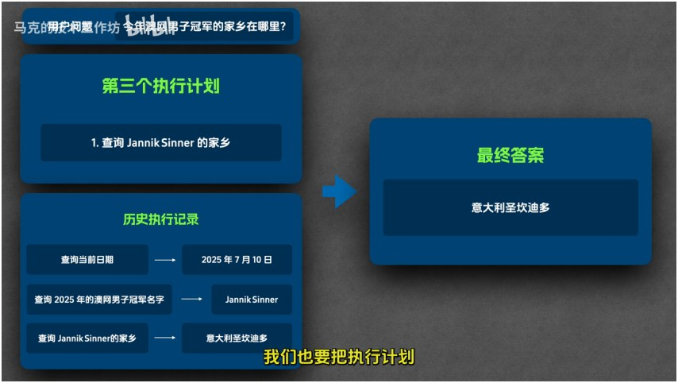
可以独立使用的问题 → 结论对照表
| 问题 | 结论 |
|---|---|
| 大模型最大的限制是什么？ | 无法感知外界环境，也无法改变外部环境 —— 查不到文件、写不了文件 |
| Agent 到底是什么？ | 大模型 + 一堆工具 + 自动运行，组装成能感知并改变外界环境的智能程序 |
| 为什么工具这么关键？ | 工具是 Agent 的感官与四肢：读写文件、查看文件列表、运行终端命令 |
| 不同 Agent（编程 / PPT / 深度搜索）差别在哪？ | 形态与领域不同，底层思想一致：大模型 + 工具 + 自动运行 |
| ReAct 是什么缩写？ | Reasoning + Acting，思考与行动；2022 年 10 月论文提出，至今最广泛使用 |
| ReAct 的四要素是什么？ | Thought（思考）→ Action（行动）→ Observation（观察）→ Final Answer（最终答案） |
| 模型为什么会「先思考再行动」？ | 几乎全部靠系统提示词，不是被专门训练出来的 |
| ReAct 的系统提示词包含哪五部分？ | 职责描述 / 示例 / 可用工具 / 注意事项 / 环境信息 |
| 工具到底是谁执行的？ | 大模型只能「请求」调用工具，真正执行的是 Agent 的工具调用组件 |
| run() 的 while 循环在干什么？ | 请求模型 → 提取 thought → 检测 final answer → 解析并执行 action → 回填 observation → 循环 |
| Agent 的三个组成部分？ | 模型（大脑）+ 工具（四肢）+ Agent 主程序（串联流程） |
| Plan & Execute 里谁负责改计划？ | Replan 模型：返回「新的执行计划」或「最终答案」二选一 |
| ReAct 和 Plan & Execute 怎么选？ | 步骤不固定、边做边看选 ReAct；目标清晰、可预先拆解选 Plan & Execute |
文中出现的关键概念
| 术语 | 解释 |
|---|---|
| Agent（智能体） | 把大模型与一堆工具组装起来、能感知并改变外界环境的智能程序 |
| 工具（Tool） | Agent 的「感官与四肢」，本质是可被调用的函数，如读写文件、查看文件列表、运行终端命令 |
| ReAct | Reasoning + Acting，最经典的 Agent 运行模式，以「思考 → 行动 → 观察」循环推进 |
| Thought | 思考环节：模型判断是否需要调用工具、下一步该做什么 |
| Action | 行动环节：模型输出要调用的工具名与参数（只是「请求」） |
| Observation | 观察环节：工具执行结果被回填给模型，作为下一轮思考的输入 |
| Final Answer | 最终答案：模型认为信息足够、无需再调用工具时给出的结论 |
| 系统提示词（System Prompt） | 与用户问题一起送给模型的提示词，规定角色、运行时规则与环境信息，相当于「迷你剧本」 |
| 工具调用组件 | Agent 中真正执行工具函数、并把结果作为 Observation 回填的部件 |
| ReActAgent | 简化版 Claude Code 里的核心类，构造时接收工具列表、模型、项目目录 |
| run() 主循环 | ReActAgent 的核心方法：请求模型 → 解析 thought/action → 执行工具 → 回填 → 循环，直到 Final Answer |
| Plan & Execute | 先规划再执行的运行模式，LangChain 提出的实践方案，含动态调整规划环节 |
| Plan 模型 | 负责生成执行计划的模型 |
| Replan 模型 | 根据每步执行结果动态调整计划的模型，返回「新计划」或「最终答案」 |
| 执行 Agent | 负责执行计划中每一步的 Agent，内部仍可用 ReAct 模式，构成「Agent 套 Agent」 |
| LangChain | 提出 Plan & Execute 模式的开源框架 |
| Manus | 深度搜索类 Agent，一开始构建待办列表、再按列表执行 |
| Claude Code / Cursor | 典型编程类 Agent；本页笔记的简化版实现即对标 Claude Code |
| uv | Python 包与运行环境管理工具，原文用 uv run agent.py snake 启动 Agent |